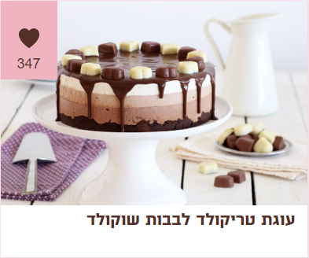

מצרכים:
-
לבסיס:
- 200 גרם ביסקוויטים פתי בר וניל או שוקו
- 100 גרם חמאה מומסת
- 2 כפות ממרח שוקולד (למשל ממרח פסק זמן או ממרח שוקולד פרה)
-
למוס שוקולד לבן:
- 2 גרם (1/2 כפית) ג'לטין
- 10 מ"ל (2 כפיות) מים קרים
- 200 גרם שוקולד לבן
- 250 מ"ל (1 מכל) שמנת להקצפה, קרה מאוד
- 80 גרם שוקולד מריר
- 75 מ"ל (1/3 כוס) שמנת להקצפה
-
לקישוט:
- לבבות שוקולד חלב ולבן
לציפוי:
אופן ההכנה:
-
בסיס:
- במעבד מזון עם להב פלדה שמים ביסקוויטים וטוחנים לאבקה דקה.
- מוסיפים חמאה מומסת וממרח שוקולד ומערבבים עד שמתקבלת תערובת אחידה ודי דביקה.
- מעבירים את התערובת לבסיס התבנית ומהדקים ליצירת בסיס די דק.
- מקפיאים במשך כחצי שעה.
-
מוס שוקולד מריר/לבן:
- בקערית קטנה שמים ג’לטין ומים ומשהים כ-10 דקות בטמפרטורת החדר עד שהג’לטין סופח את הנוזלים.
- שוברים את השוקולד לקוביות ושמים בקערה.
- מוסיפים 2-3 כפות מהשמנת לשוקולד וממסים יחד במיקרוגל או על גבי סיר אדים כפול. מערבבים היטב עד שמתקבלת תערובת אחידה.
- ממסים את הג’לטין במיקרוגל במשך כמה שניות ומוסיפים לתערובת השוקולד. מערבבים היטב.
- בקערת מיקסר מקציפים את יתרת השמנת לקצפת יציבה אך רכה.
- מקפלים את הקצפת לתוך תערובת השוקולד עד שמתקבל מוס אחיד ומעט דליל.
- יוצקים את המוס על גבי שכבת מוס השוקולד המריר ומיישרים.
- מקפיאים למשך כשעה להתייצבות.
-
ציפוי שוקולד:
- שוברים את השוקולד לקוביות ושמים בקערה.
- מוסיפים שמנת וממסים יחד במיקרוגל או על סיר אדים כפול.
- מערבבים היטב עד שמתקבל ציפוי אחיד ומבריק.
- מחלצים את העוגה הקפואה מהתבנית ומניחים על גבי צלחת הגשה.
- יוצקים בעדינות את הציפוי בחלק העליון של העוגה ומניחים לו לנזול מעט על הדפנות.
- מקשטים בלבבות שוקולד לבן וחלב לסירוגין.
- מפשירים את העוגה במשך 3-4 שעות במקרר ומגישים.